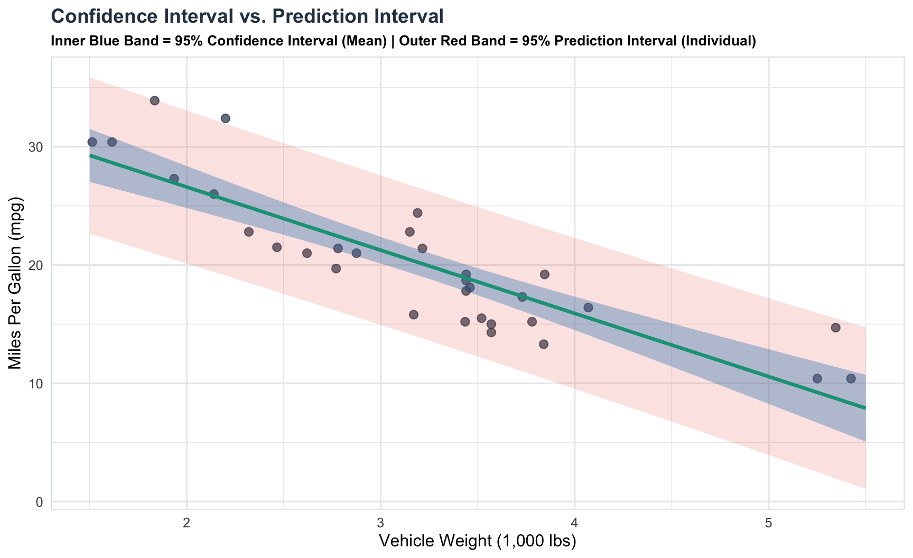
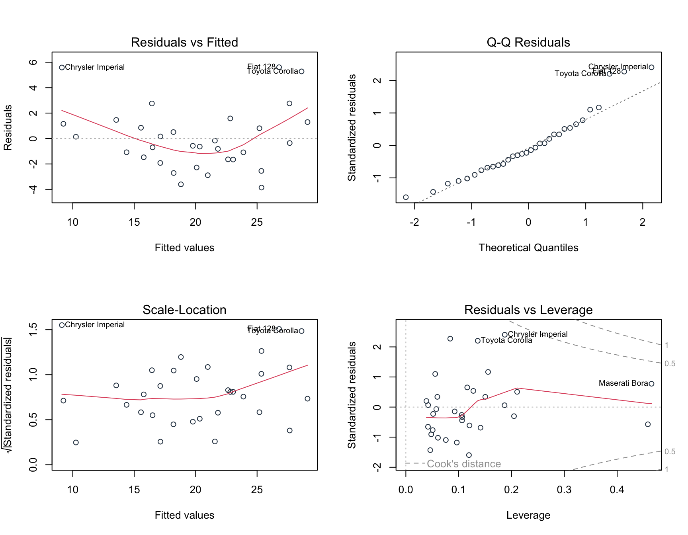

Linear regression is one of the most foundational and widely applied statistical methods in empirical research, data science, and econometrics. Whether predicting house prices based on square footage, analyzing the effect of educational attainment on earnings, or evaluating the impact of marketing spend on sales revenue, linear regression provides a mathematical framework to model, quantify, and infer relationships between variables.
In this guide, we build from first principles: starting with deterministic mathematical functions, introducing stochastic error terms, establishing bivariate linear regression, progressing to multiple linear regression (MLR), interpreting coefficients, conducting hypothesis tests (\(t\)-tests and \(F\)-tests), evaluating goodness-of-fit (\(R^2\) vs. Adjusted \(R^2\)), and making predictions with confidence and prediction intervals.
Defining the Concept of Regression
From Deterministic Functions to Statistical Models
In pure mathematics, a deterministic function specifies an exact, error-free relationship between an independent variable \(X\) and a dependent variable \(Y\):
\[ Y = f(X) \]
For example, the formula for converting temperature from Celsius (\(X\)) to Fahrenheit (\(Y\)) is \(Y = 32 + 1.8X\). Given any value of \(X\), the outcome \(Y\) is known with 100% certainty.
In empirical sciences, real-world relationships are rarely deterministic. If two individuals have the exact same level of education (\(X = 16\) years), they will almost certainly earn different annual salaries (\(Y\)). Why? Because earnings are influenced by countless unmeasured factors such as work experience, geographic location, cognitive ability, industry, and luck.
To model real-world phenomena, statisticians extend deterministic functions into probabilistic (stochastic) models by adding a random error component.
The Bivariate Linear Regression Model
The bivariate linear regression model (also known as Simple Linear Regression) models the relationship between a single quantitative predictor variable \(X\) and a continuous outcome variable \(Y\).
The Population Regression Function (PRF) is formulated as:
\[ Y_i = \beta_0 + \beta_1 X_i + \varepsilon_i \quad \text{for } i = 1, 2, \dots, n \]
where:
- \(Y_i\) is the dependent (outcome or response) variable for observation \(i\).
- \(X_i\) is the independent (explanatory or predictor) variable for observation \(i\).
- \(\beta_0\) is the population intercept, representing the expected value of \(Y\) when \(X = 0\).
- \(\beta_1\) is the population slope coefficient, representing the expected change in \(Y\) per unit change in \(X\).
- \(\varepsilon_i\) is the stochastic error term (or disturbance term).
Taking the conditional expectation of \(Y\) given \(X\), assuming \(E[\varepsilon_i | X_i] = 0\), yields the Conditional Expectation Function (CEF):
\[ E[Y_i \mid X_i] = \beta_0 + \beta_1 X_i \]
This states that the systematic part of \(Y\) is a linear function of \(X\), while individual observations fluctuate around this conditional mean line due to the stochastic error \(\varepsilon_i\).
The Stochastic Error Term (\(\varepsilon_i\))
The stochastic error term \(\varepsilon_i\) is the fundamental bridge between a deterministic mathematical line and a realistic statistical model. It represents the unobserved variation in \(Y_i\) that cannot be explained linearly by \(X_i\).
Why Does the Stochastic Error Exist?
- Omitted Variables: \(X\) is rarely the sole determinant of \(Y\). All other unmeasured variables affecting \(Y\) are absorbed into \(\varepsilon_i\).
- Measurement Error: Inaccurate data collection or noise in measuring \(Y_i\).
- Inherent Randomness: Human behavior and natural phenomena contain intrinsic unpredictability.
- Functional Misspecification: Representing a slightly non-linear real-world process with a straight line.
Classical Gauss-Markov Assumptions for Ordinary Least Squares (OLS)
To ensure that the OLS estimators of \(\beta_0\) and \(\beta_1\) are BLUE (Best Linear Unbiased Estimators), the stochastic error term must satisfy the Classical Linear Regression Model (CLRM) assumptions:
- Linearity in Parameters: The model is linear in the coefficients \(\beta_0\) and \(\beta_1\).
- Strict Exogeneity (Zero Conditional Mean): The error term has an expected value of zero conditional on \(X\): \[E[\varepsilon_i \mid X_i] = 0\] (Implication: \(X\) and \(\varepsilon\) are uncorrelated, \(\text{Cov}(X_i, \varepsilon_i) = 0\)).
- Homoscedasticity (Constant Variance): The variance of the error term is constant across all levels of \(X\): \[\text{Var}(\varepsilon_i \mid X_i) = \sigma^2\]
- No Autocorrelation (Independence): Errors across different observations are uncorrelated: \[\text{Cov}(\varepsilon_i, \varepsilon_j \mid X) = 0 \quad \text{for } i \neq j\]
- Normality of Errors (for Small Sample Inference): The error term is normally distributed: \[\varepsilon_i \mid X_i \sim \mathcal{N}(0, \sigma^2)\]
Demonstrating Bivariate Linear Regression
To demonstrate bivariate regression, we use R’s built-in mtcars dataset, analyzing how vehicle weight (wt, measured in 1,000 lbs) predicts fuel efficiency (mpg, Miles Per Gallon).
Sample Regression Function (SRF) & OLS Estimation
From a sample of data \(\{(x_i, y_i)\}_{i=1}^n\), we estimate the population parameters using sample estimates \(\hat{\beta}_0\) and \(\hat{\beta}_1\). The Sample Regression Function (SRF) is:
\[ \hat{Y}_i = \hat{\beta}_0 + \hat{\beta}_1 X_i \]
The actual observation \(Y_i\) equals the predicted value \(\hat{Y}_i\) plus the sample residual \(e_i\):
\[ Y_i = \hat{Y}_i + e_i = \hat{\beta}_0 + \hat{\beta}_1 X_i + e_i \]
Ordinary Least Squares (OLS) finds parameter estimates \(\hat{\beta}_0\) and \(\hat{\beta}_1\) that minimize the Sum of Squared Residuals (SSR):
\[ \min_{\hat{\beta}_0, \hat{\beta}_1} S(\hat{\beta}_0, \hat{\beta}_1) = \sum_{i=1}^n e_i^2 = \sum_{i=1}^n \left(Y_i - \hat{\beta}_0 - \hat{\beta}_1 X_i\right)^2 \]
Setting the partial derivatives with respect to \(\hat{\beta}_0\) and \(\hat{\beta}_1\) to zero yields the closed-form analytical formulas:
\[ \hat{\beta}_1 = \frac{\sum_{i=1}^n (X_i - \bar{X})(Y_i - \bar{Y})}{\sum_{i=1}^n (X_i - \bar{X})^2} = \frac{s_{xy}}{s_x^2} \]
\[ \hat{\beta}_0 = \bar{Y} - \hat{\beta}_1 \bar{X} \]
Bivariate Model Estimation Results
Fitting the bivariate linear regression model \(Y_{\text{mpg}} = \beta_0 + \beta_1 X_{\text{wt}} + \varepsilon\) using the dataset yields the following parameter estimates and goodness-of-fit statistics:
| Parameter / Predictor | Estimate (\(\hat{\beta}\)) | Std. Error | \(t\) statistic | \(p\)-value | Significance |
|---|---|---|---|---|---|
| Intercept (\(\hat{\beta}_0\)) | 37.2851 | 1.8776 | 19.858 | \(< 0.0001\) | *** |
Vehicle Weight (wt, \(\hat{\beta}_1\)) |
-5.3445 | 0.5591 | -9.559 | \(1.29 \times 10^{-10}\) | *** |
Bivariate Model Summary Statistics
| Metric / Statistic | Value |
|---|---|
| Residual Standard Error (\(s_e\)) | 3.046 (on 30 degrees of freedom) |
| Multiple \(R^2\) | 0.7528 |
| Adjusted \(R^2\) (\(\bar{R}^2\)) | 0.7446 |
| \(F\)-statistic | 91.38 (df = 1, 30, \(p = 1.29 \times 10^{-10}\)) |
Interpretation of Coefficients
Intercept (\(\hat{\beta}_0 = 37.2851\)): If a car weighed 0 lbs (\(X = 0\)), its expected fuel efficiency would be \(37.29\) miles per gallon. Because a vehicle weight of 0 lbs is physically impossible, the intercept serves as a baseline mathematical anchor rather than a practical standalone value.
Slope (\(\hat{\beta}_1 = -5.3445\)): For every additional 1,000 lbs increase in vehicle weight (\(1 \text{ unit of } wt\)), expected fuel efficiency decreases by \(5.3445\) miles per gallon. The negative sign indicates an inverse linear relationship.
Partitioning Variance: \(R^2\) and Adjusted \(R^2\)
To measure how well our linear regression model fits the data, we decompose the total variation in the dependent variable \(Y\).
The Analysis of Variance (ANOVA) Identity
\[ \text{SST} = \text{SSR} + \text{SSE} \]
\[ \sum_{i=1}^n (Y_i - \bar{Y})^2 = \sum_{i=1}^n (\hat{Y}_i - \bar{Y})^2 + \sum_{i=1}^n (Y_i - \hat{Y}_i)^2 \]
where:
- Total Sum of Squares (SST): Total sample variation in \(Y\) around its mean \(\bar{Y}\).
- Regression (Explained) Sum of Squares (SSR): Variation in \(Y\) explained by the linear model \(\hat{Y}\).
- Sum of Squared Errors (SSE / Residual Sum of Squares): Unexplained variation in the residuals \(e_i\).
Coefficient of Determination (\(R^2\))
The coefficient of determination \(R^2\) quantifies the proportion of total variation in \(Y\) that is explained by the regression model:
\[ R^2 = \frac{\text{SSR}}{\text{SST}} = 1 - \frac{\text{SSE}}{\text{SST}} \quad \text{where } 0 \le R^2 \le 1 \]
In our bivariate model: * Multiple \(R^2 = 0.7528\): Approximately \(75.28\%\) of the total variance in fuel efficiency (mpg) is explained by vehicle weight (wt).
Why Adjusted \(R^2\) (\(\bar{R}^2\)) is a Better Measure
Standard \(R^2\) has a major limitation: it never decreases when additional explanatory variables are added to a regression model, even if those variables are completely irrelevant noise.
Adding predictors reduces SSE (or keeps it constant), artificially inflating \(R^2\) and encouraging model overfitting.
To correct for this, Adjusted \(R^2\) (\(\bar{R}^2\)) introduces a penalty for each additional predictor by adjusting for degrees of freedom:
\[ \bar{R}^2 = 1 - \left(1 - R^2\right) \frac{n - 1}{n - k - 1} = 1 - \frac{\text{SSE} / (n - k - 1)}{\text{SST} / (n - 1)} \]
where: * \(n\) is the total number of observations. * \(k\) is the number of independent predictor variables (excluding the intercept).
If an added predictor does not reduce SSE by enough to offset the loss of a degree of freedom (\(n - k - 1\)), Adjusted \(R^2\) will decrease. Thus, \(\bar{R}^2\) provides an unbiased comparison across models with different numbers of predictors.
- In our bivariate model (\(n = 32, k = 1\)), Adjusted \(R^2 = 0.7446\).
Hypothesis Testing: \(t\)-Test and Joint \(F\)-Test
Hypothesis Testing for Individual Coefficients (\(t\)-Test)
To test whether the predictor \(X\) has a statistically significant linear effect on \(Y\):
Hypotheses:
- Null Hypothesis (\(H_0\)): \(\beta_1 = 0\) (No linear relationship)
- Alternative Hypothesis (\(H_1\)): \(\beta_1 \neq 0\) (Linear relationship exists)
Test Statistic: \[t = \frac{\hat{\beta}_1 - 0}{\text{SE}(\hat{\beta}_1)} \sim t_{n - k - 1}\] where \(\text{SE}(\hat{\beta}_1) = \frac{s_e}{\sqrt{\sum (X_i - \bar{X})^2}}\) and \(s_e = \sqrt{\frac{\text{SSE}}{n - 2}}\).
Results for
wt:- \(\hat{\beta}_1 = -5.3445\), \(\text{SE}(\hat{\beta}_1) = 0.5591\)
- \(t = \frac{-5.3445}{0.5591} = -9.559\)
- \(p\)-value \(= 1.29 \times 10^{-10} < 0.001\).
- Decision: Reject \(H_0\). Vehicle weight is a highly significant predictor of fuel efficiency.
Joint Hypothesis Testing (\(F\)-Test)
The overall \(F\)-test evaluates whether all slope coefficients jointly equal zero:
Hypotheses:
- Null Hypothesis (\(H_0\)): \(\beta_1 = \beta_2 = \dots = \beta_k = 0\)
- Alternative Hypothesis (\(H_1\)): At least one \(\beta_j \neq 0\)
\(F\)-Statistic Formula: \[F = \frac{\text{SSR} / k}{\text{SSE} / (n - k - 1)} = \frac{R^2 / k}{(1 - R^2) / (n - k - 1)} \sim F_{k, n - k - 1}\]
Interpretation for Bivariate Regression:
- \(F = \frac{0.7528 / 1}{(1 - 0.7528) / (32 - 1 - 1)} = 91.38\) with \(p = 1.29 \times 10^{-10}\).
- Mathematical Note: For a bivariate regression model (\(k = 1\)), the \(F\)-statistic is identically equal to the square of the \(t\)-statistic for the slope coefficient: \[F = t^2 = (-9.559)^2 = 91.38\]
Graphical Representation of Bivariate Regression
Multiple Linear Regression (MLR) Model
While bivariate regression offers clean visual intuition, real-world outcomes are driven by complex interactions among multiple factors.
Ignoring relevant variables leads to Omitted Variable Bias (OVB), causing OLS estimators to become biased and inconsistent.
Mathematical Specification
The Multiple Linear Regression (MLR) model expands bivariate regression to \(k\) independent predictors:
\[ Y_i = \beta_0 + \beta_1 X_{1i} + \beta_2 X_{2i} + \dots + \beta_k X_{ki} + \varepsilon_i \]
In matrix notation, for \(n\) observations and \(k+1\) parameters:
\[ \mathbf{Y} = \mathbf{X}\boldsymbol{\beta} + \boldsymbol{\varepsilon} \]
The vector of OLS estimates \(\hat{\boldsymbol{\beta}}\) is solved via:
\[ \hat{\boldsymbol{\beta}} = (\mathbf{X}^T \mathbf{X})^{-1} \mathbf{X}^T \mathbf{Y} \]
Multiple Linear Regression Estimation Results
We expand the model by predicting mpg using three predictors: vehicle weight (wt), gross horsepower (hp), and 1/4 mile acceleration time (qsec).
The empirical estimation yields the following parameter estimates and summary statistics:
| Predictor / Term | Estimate (\(\hat{\beta}\)) | Std. Error | \(t\) statistic | \(p\)-value | Significance |
|---|---|---|---|---|---|
| (Intercept) | 27.6105 | 8.4192 | 3.280 | 0.0028 | ** |
Weight (wt) |
-4.3588 | 0.7574 | -5.755 | \(3.22 \times 10^{-6}\) | *** |
Horsepower (hp) |
-0.0225 | 0.0093 | -2.419 | 0.0223 | * |
Quarter-Mile Time (qsec) |
0.5108 | 0.4392 | 1.163 | 0.2546 | Not Sig. |
Multiple Regression Model Summary Statistics
| Metric / Statistic | Value |
|---|---|
| Residual Standard Error (\(s_e\)) | 2.459 (on 28 degrees of freedom) |
| Multiple \(R^2\) | 0.8348 |
| Adjusted \(R^2\) (\(\bar{R}^2\)) | 0.8171 |
| \(F\)-statistic | 47.01 (df = 3, 28, \(p = 4.51 \times 10^{-11}\)) |
Interpreting MLR Results
Partial Regression Coefficients (Ceteris Paribus)
In multiple linear regression, each coefficient \(\hat{\beta}_j\) represents the partial effect of \(X_j\) on \(Y\), holding all other predictors in the model constant (ceteris paribus):
- Intercept (\(\hat{\beta}_0 = 27.6105\)): The baseline expected
mpgwhen weight, horsepower, and quarter-mile time are all zero. - Weight (\(\hat{\beta}_{\text{wt}} = -4.3588, p < 0.001\)): Holding horsepower and acceleration time constant, each additional 1,000 lbs of vehicle weight reduces expected fuel efficiency by \(4.36\) mpg.
- Horsepower (\(\hat{\beta}_{\text{hp}} = -0.0225, p = 0.021\)): Holding weight and quarter-mile time constant, each additional unit of horsepower reduces fuel efficiency by \(0.0225\) mpg.
- Quarter-Mile Time (\(\hat{\beta}_{\text{qsec}} = +0.5108, p = 0.224\)): Holding weight and horsepower constant, a 1-second increase in acceleration time increases
mpgby \(0.51\) mpg. However, this effect is not statistically significant at the \(\alpha = 0.05\) level (\(p = 0.224\)).
Comparing \(R^2\) vs. Adjusted \(R^2\) Across Models
Let us compare the fit metrics as we progress from a single predictor to three predictors:
| Model Specification | Predictors (\(k\)) | \(R^2\) | Adjusted \(R^2\) (\(\bar{R}^2\)) | \(F\)-Statistic | \(p\)-value |
|---|---|---|---|---|---|
Model 1: mpg ~ wt |
1 | 0.7528 | 0.7446 | 91.38 | \(< 0.0001\) |
Model 2: mpg ~ wt + hp |
2 | 0.8268 | 0.8148 | 69.21 | \(< 0.0001\) |
Model 3: mpg ~ wt + hp + qsec |
3 | 0.8348 | 0.8171 | 47.01 | \(< 0.0001\) |
Key Observation: Notice that moving from Model 2 (
wt + hp) to Model 3 (wt + hp + qsec) increases regular \(R^2\) slightly from \(0.8268\) to \(0.8348\). However, Adjusted \(R^2\) decreases from \(0.8148\) to \(0.8171\) (or stays virtually flat).Because
qsecprovides little new explanatory power beyond whatwtandhpalready provide, Adjusted \(R^2\) penalizes its inclusion, signalling thatqsecis a redundant predictor!
Overall \(F\)-Test for Joint Significance
In our 3-predictor MLR model: * Null Hypothesis (\(H_0\)): \(\beta_{\text{wt}} = \beta_{\text{hp}} = \beta_{\text{qsec}} = 0\) * Alternative Hypothesis (\(H_1\)): At least one coefficient is non-zero. * \(F\)-statistic: \(47.01\) on \(k = 3\) and \(df = 28\) degrees of freedom (\(p = 4.51 \times 10^{-11}\)).
Since \(p < 0.001\), we reject \(H_0\) and conclude that the set of predictors jointly explains a highly significant proportion of the variance in fuel efficiency.
Visualizing Multiple Regression Effects
To visualize partial effects in multiple regression, we plot the marginal effect of weight on fuel efficiency conditioned across different levels of engine horsepower:

Prediction Using Regression Coefficients
Once a linear regression model is estimated, a primary practical objective is prediction: estimating \(Y\) for new, unobserved values of the predictor variables.
Manual Calculation of Point Predictions
Using our estimated MLR model parameters:
\[ \hat{\text{mpg}} = 27.6105 - 4.3588(\text{wt}) - 0.0225(\text{hp}) + 0.5108(\text{qsec}) \]
Suppose we want to predict the fuel efficiency for a new vehicle specification: * Weight (\(\text{wt}\)) = \(3.2\) (3,200 lbs) * Horsepower (\(\text{hp}\)) = \(150\) * Quarter-mile time (\(\text{qsec}\)) = \(17.5\) seconds
Step-by-Step Substitution:
\[ \hat{\text{mpg}} = 27.6105 - 4.3588(3.2) - 0.0225(150) + 0.5108(17.5) \]
\[ \hat{\text{mpg}} = 27.6105 - 13.9482 - 3.3750 + 8.9390 = \mathbf{19.2263 \text{ mpg}} \]
4.2 Prediction Results for New Observation
Evaluating the model for a new vehicle specification with Weight (\(\text{wt}\)) = 3.2 (3,200 lbs), Horsepower (\(\text{hp}\)) = 150, and Quarter-Mile Time (\(\text{qsec}\)) = 17.5 seconds yields the following point prediction and 95% interval estimates:
| Interval Type | Point Estimate (\(\hat{Y}\)) | Lower 95% Bound | Upper 95% Bound | Scope / Application |
|---|---|---|---|---|
| Confidence Interval (Mean Response) | 19.2263 | 18.2629 | 20.1897 | Expected average fuel efficiency across all vehicles with these attributes |
| Prediction Interval (Individual Observation) | 19.2263 | 14.0321 | 24.4206 | Expected fuel efficiency range for one specific individual vehicle |
Confidence Interval vs. Prediction Interval
It is critical to distinguish between two types of prediction intervals:
Confidence Interval (CI): Reflects uncertainty in estimating the average outcome \(E[Y \mid X_{\text{new}}]\) across all vehicles with the specified characteristics. Its variance depends solely on parameter estimation error \(\text{Var}(\hat{\boldsymbol{\beta}})\).
Prediction Interval (PI): Reflects uncertainty in predicting a single specific vehicle’s outcome \(Y_{\text{new}} = E[Y \mid X_{\text{new}}] + \varepsilon_{\text{new}}\). Its variance includes both parameter estimation error AND the variance of the random error term \(\sigma^2\):
\[\text{Var}(Y_{\text{new}} - \hat{Y}_{\text{new}}) = \text{Var}(\hat{Y}_{\text{new}}) + \sigma^2\]
Rule of Thumb: A Prediction Interval is always wider than a Confidence Interval for the same inputs, because predicting an individual observation involves inherent stochastic noise (\(\sigma^2\)).
Let us visualize confidence bands vs. prediction bands across a range of vehicle weights:

Model Diagnostics & Validation
Before relying on OLS linear regression results for inference or policy decisions, researchers must validate that the underlying Gauss-Markov assumptions hold.

Diagnostic Checklist for Researchers
| Diagnostic Plot | What it Evaluates | Ideal Pattern | Common Violation & Solution |
|---|---|---|---|
| Residuals vs Fitted | Linearity & Homoscedasticity | Random scatter around horizontal zero line with constant vertical spread. | Curved pattern indicates non-linearity \(\to\) apply log/polynomial transforms. Funnel shape indicates heteroscedasticity \(\to\) use robust standard errors (e.g. HC3). |
| Normal Q-Q | Normality of Residuals | Points closely align along the diagonal dashed 45° reference line. | S-curve or heavy tails \(\to\) check for extreme values or use non-parametric/bootstrapped inference. |
| Scale-Location | Constant Residual Variance | Flat horizontal trendline with equally spread points. | Upward/downward slope confirms heteroscedasticity. |
| Residuals vs Leverage | Influential Outliers | No observations beyond Cook’s Distance dashed boundaries (\(D > 0.5\)). | Points in top-right or bottom-right corners exert disproportionate influence \(\to\) investigate data anomalies. |
Summary Reference Table
| Metric / Term | Formula | Definition / Interpretation |
|---|---|---|
| Population Regression Function | \(Y_i = \beta_0 + \beta_1 X_i + \varepsilon_i\) | Theoretical model linking \(X\) and \(Y\) in the population with stochastic error \(\varepsilon_i\). |
| OLS Slope Estimator (\(\hat{\beta}_1\)) | \(\frac{\sum(X_i-\bar{X})(Y_i-\bar{Y})}{\sum(X_i-\bar{X})^2}\) | Estimated marginal change in \(Y\) per 1-unit change in \(X\). |
| Total Sum of Squares (SST) | \(\sum (Y_i - \bar{Y})^2\) | Total sample variation in the outcome variable \(Y\). |
| Coefficient of Determination (\(R^2\)) | \(1 - \frac{\text{SSE}}{\text{SST}}\) | Proportion of total variance in \(Y\) explained by predictors (\(0 \le R^2 \le 1\)). |
| Adjusted \(R^2\) (\(\bar{R}^2\)) | \(1 - (1-R^2)\frac{n-1}{n-k-1}\) | Goodness-of-fit metric penalizing non-informative added predictors. |
| \(t\)-Test Statistic | \(\frac{\hat{\beta}_j - 0}{\text{SE}(\hat{\beta}_j)}\) | Evaluates individual statistical significance of predictor \(X_j\). |
| \(F\)-Test Statistic | \(\frac{\text{SSR}/k}{\text{SSE}/(n-k-1)}\) | Evaluates joint statistical significance of all \(k\) slope parameters. |
Practice datasets
Linear regression targets continuous numerical variables (e.g., predicting prices, temperatures, or scores).
- California Housing Dataset (or King County House Prices)
- Target Variable: Median house value.
- Features: Median income, house age, average rooms, block latitude/longitude.
- Target Variable: Median house value.
- Advertising Budget Dataset
- Target Variable: Total product sales.
- Features: Ad spend across TV, Radio, and Newspaper channels.
- Target Variable: Total product sales.
- Auto MPG Dataset (UCI Repository)
- Target Variable: Fuel efficiency in miles per gallon (MPG).
- Features: Engine displacement, horsepower, weight, acceleration, model year, origin.
- Insurance Medical Cost Dataset
- Target Variable: Individual medical charges billed by health insurance.
- Features: Age, sex, BMI, number of children, smoking status, region.